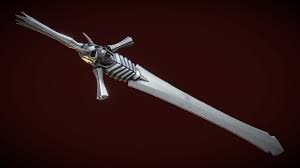
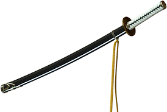
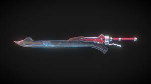
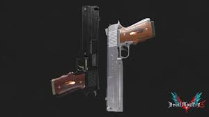
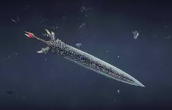
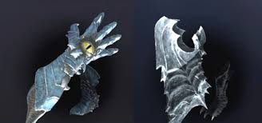

Rebellion
A Rebellion é a espada principal de Dante e uma das armas mais icônicas da franquia. Ela possui um enorme poder demoníaco herdado de Sparda.
Portador: Dante
Primeira aparição: Devil May Cry 2 (2003)

Yamato
A Yamato é a lendária katana utilizada por Vergil. A arma possui o poder de cortar dimensões e separar o mundo humano do demoníaco.
Portador: Vergil
Primeira aparição: Devil May Cry 3 (2005)

Red Queen
A Red Queen é a espada mecânica de Nero. Seu sistema de aceleração permite ataques extremamente rápidos e destrutivos.
Portador: Nero
Primeira aparição: Devil May Cry 4 (2008)

Ebony & Ivory
As pistolas Ebony & Ivory são as armas de fogo mais famosas de Dante. Elas combinam velocidade, precisão e estilo durante os combates.
Portador: Dante
Primeira aparição: Devil May Cry (2001)

Devil Sword Dante
A Devil Sword Dante representa o verdadeiro despertar do poder de Dante. A espada foi criada após a fusão da Rebellion com o poder demoníaco de Sparda.
Portador: Dante
Primeira aparição: Devil May Cry 5 (2019)

Beowulf
Beowulf é uma poderosa arma baseada em luz, formada por manoplas e grevas utilizadas em ataques corpo a corpo devastadores.
Portador: Vergil
Primeira aparição: Devil May Cry 3 (2005)